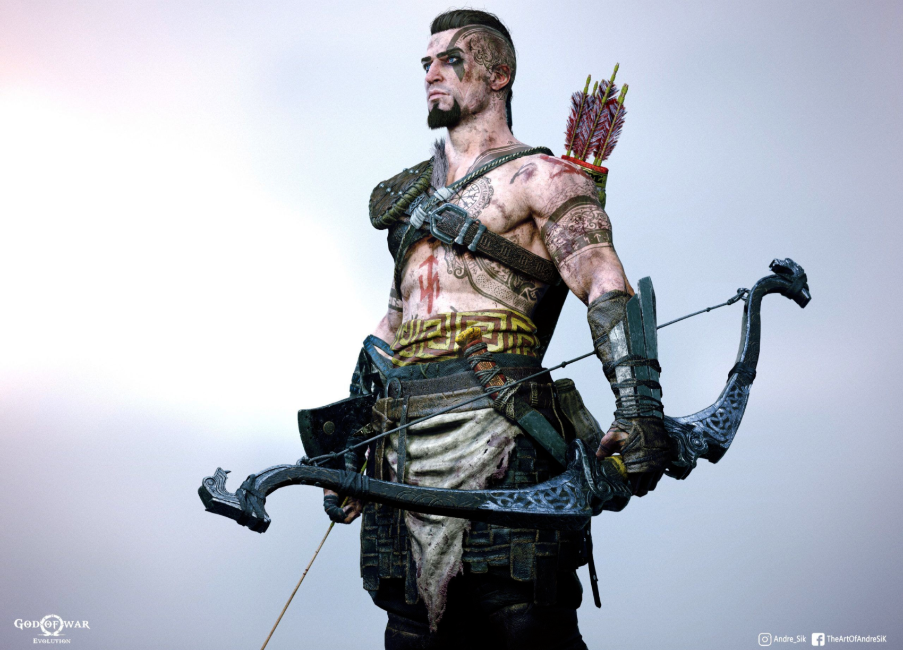

Атрэй в конечном счёте оказался скандинавским богом Локи, а его мать Фэй оказалась великаншей! Один гонялся за Кратосом и Атреем потому, что великаны предсказали Всеотцу, что он умрёт во время Рагнарёка. Близилась великая и очень долгая зима Фимбулвинтер, после которой должен был произойти Рагнарёк. Так как Атрэй был наполовину богом, наполовину великаном, Один пытался попасть в Йотунхейм, мир великанов, чтобы предсказать Рагнарёк, чтоб при нём не умереть. P.S. - так много я ещё никогда не писал , поэтому пальцы стёрлись :D .
